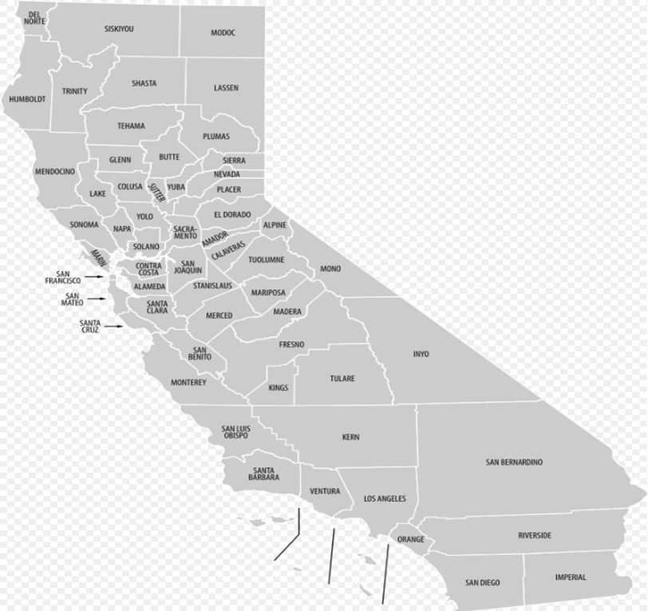
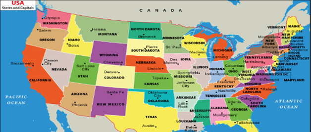
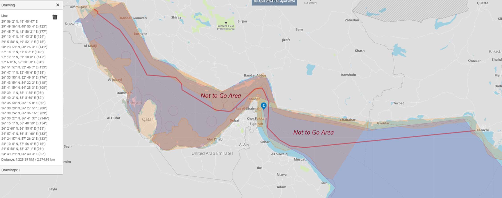
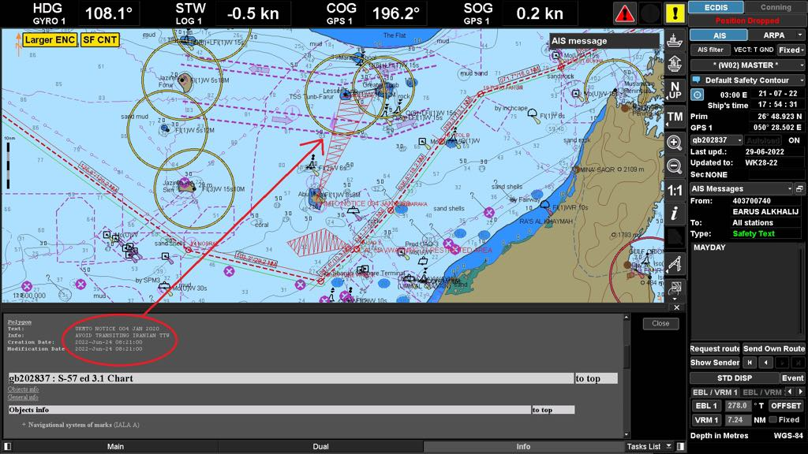
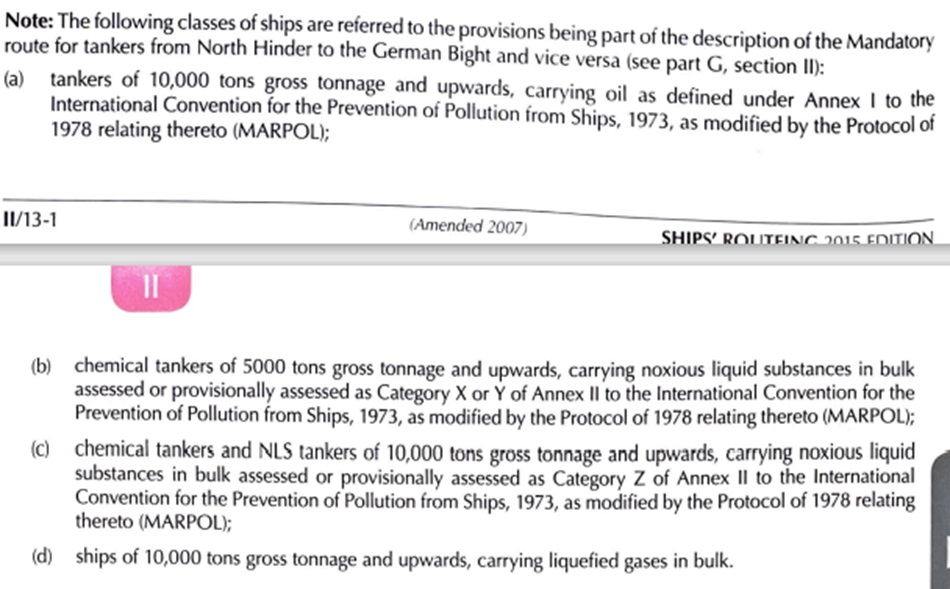
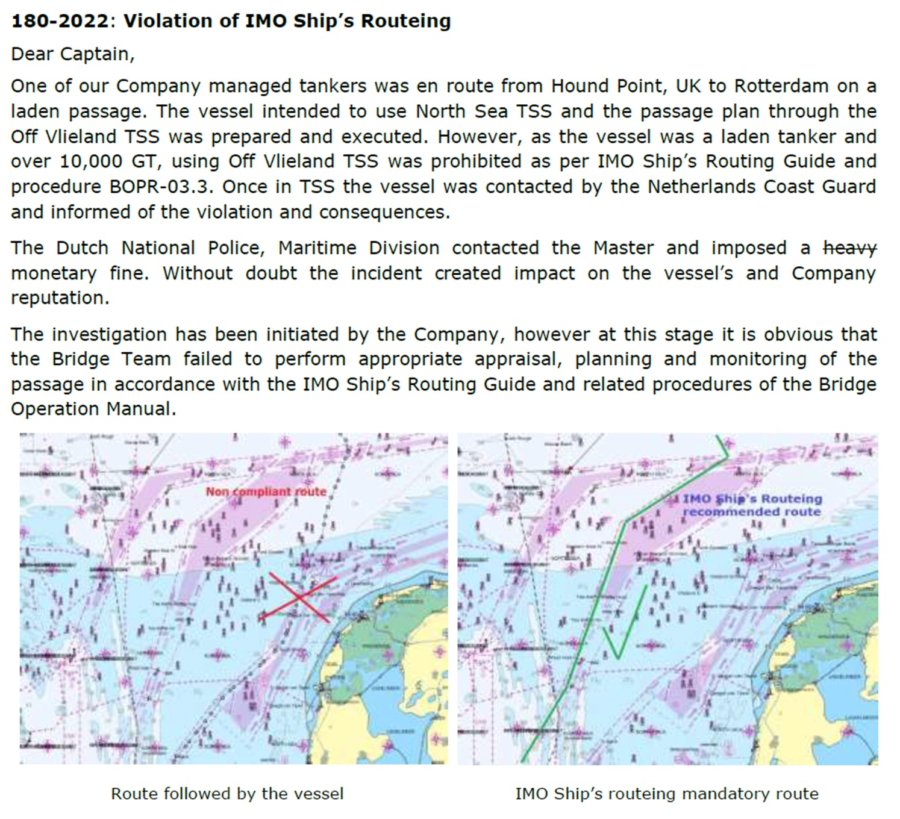
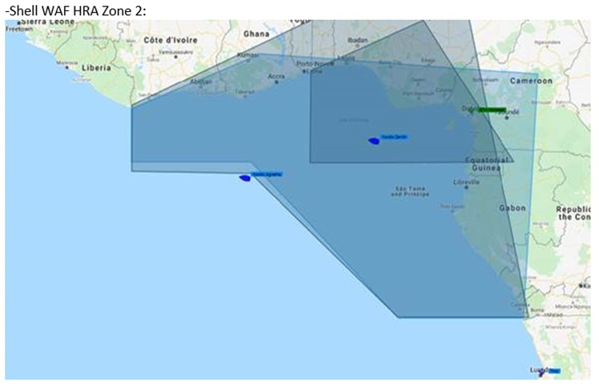
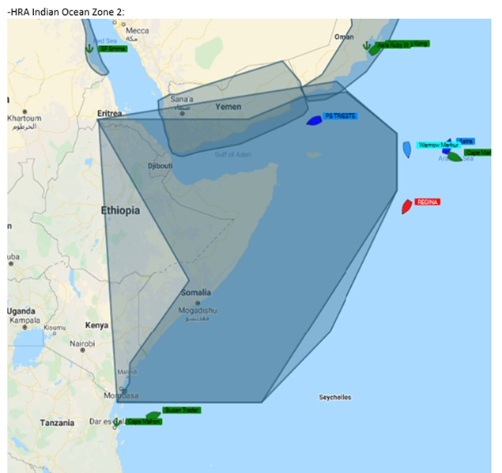
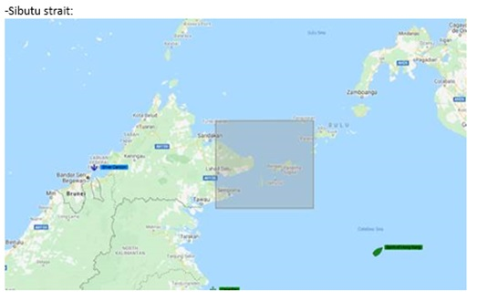

WELCOME TO
NOTIGUIDEEasy-to-understand information on maritime notification procedures.
Explore our site for clear guidance on keeping your voyages safe and compliant.WELCOME TO
NOTIGUIDEEasy-to-understand information on maritime notification procedures.
Explore our site for clear guidance on keeping your voyages safe and compliant.| Bulletin-Korea_Speed_Reduction_Guide_Ver_1_June_2020.pdf |
 Crimea
Crimea Cuba
Cuba Guinea / Guinea-Bissau
Guinea / Guinea-Bissau Iran
Iran Iraq
Iraq Libya
Libya Myanmar
Myanmar Nicaragua
Nicaragua North Korea
North Korea Off Kerch STS
Off Kerch STS Russia
Russia Somalia
Somalia Sudan
Sudan Syria
Syria Ukraine
Ukraine Venezuela
Venezuela Yemen
Yemen Antwerp
Antwerp AustraliaFremantle Australia
AustraliaFremantle Australia| Attachment 02.1 Port of Fremantle 02.pdf |
 California
California

 |
|
||
|---|---|---|---|
| Attachment California 13.5 - Terminal Operator Visit Report Template.xlsx | Attachment California 13.6 - Vessel Operator Visit Report Template.xlsx | CALIFORNIA 13.doc | TIN-48.docx |
 China China - Yangshan Water
China China - Yangshan Water Hamburg Hong Kong
Hamburg Hong Kong Japan
Japan| Ballast Water Management Requirements from Korean Authorities - Fukushim....pdf |
| N01-2024-Vessel-Requirements...pdf |
 South Korea
South Korea| korean_sox_emission_control_areas.pdf |
 Turkish Port USA
Turkish Port USA

| SAILING DIRECTION FOR THE CHANGHUA WIND FARM CHANNEL.pdf |
| China_ECA_Hainan_Island.pdf | TIN-30a - Local Governmental Emission Controlled Areas (China).pdf |
| Maritime Advisory and Recommended Procedures _Red Sea.pdf | Industry Routing Advice - Middle East.pdf | IMO Draft cover letter.pdf | 2023-03 Guidance Bulletin - Maritime Secuity Advisory.pdf |
| Navigational Safety Guidelines for the Vessels transiting the Strait of Hormuz.pdf |

| Industry Routing Advice – Middle East.pdf |
| Pages from JWLA032 2023.pdf |
Turkish Strait |
|
|---|---|
| 7tiOuNc1.jpg | UKMTO NOTICE 004 JAN 2020.pdf |


Environmental Compliance

